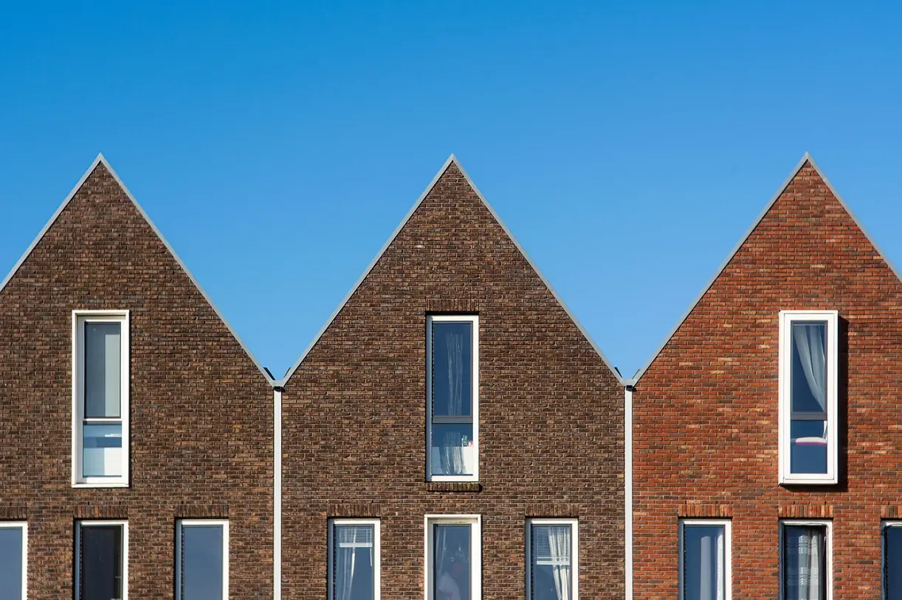
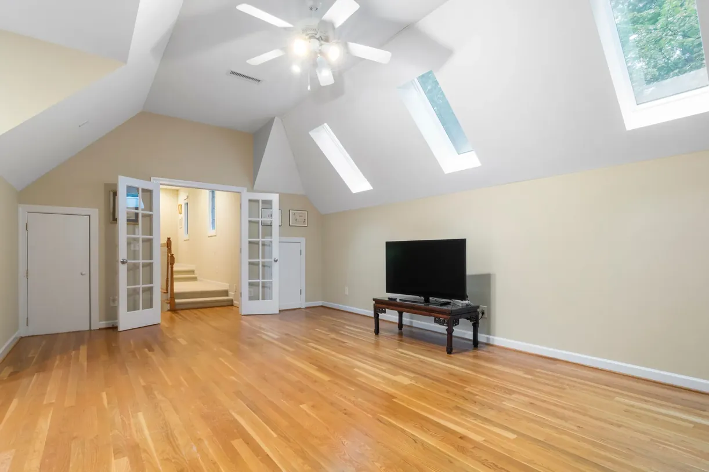

Projekte
Sechs Häuser zwischen Telgte und Nottuln, gebaut zwischen 2021 und 2024.
-
Haus am Deich

Ein Holzhaus hinter dem Deich, für drei Generationen.
-
Umbau Hofstelle

Ein Backsteinhof, der zum Wohnhaus wird und seine Tenne behält.
-
Anbau Gartenhaus

Ein gläserner Raum zwischen Haus und Garten, zu jeder Jahreszeit.
-
Wohnhaus Kreuzviertel

Ein Stadthaus in Backstein auf sieben Metern Breite.
-
Aufstockung Reihenhaus

Ein neues Geschoss aus Holz, in vier Wochen aufgesetzt.
-
Haus im Wald

Ein Haus zwischen Kiefern, mit Türen nach allen Seiten.